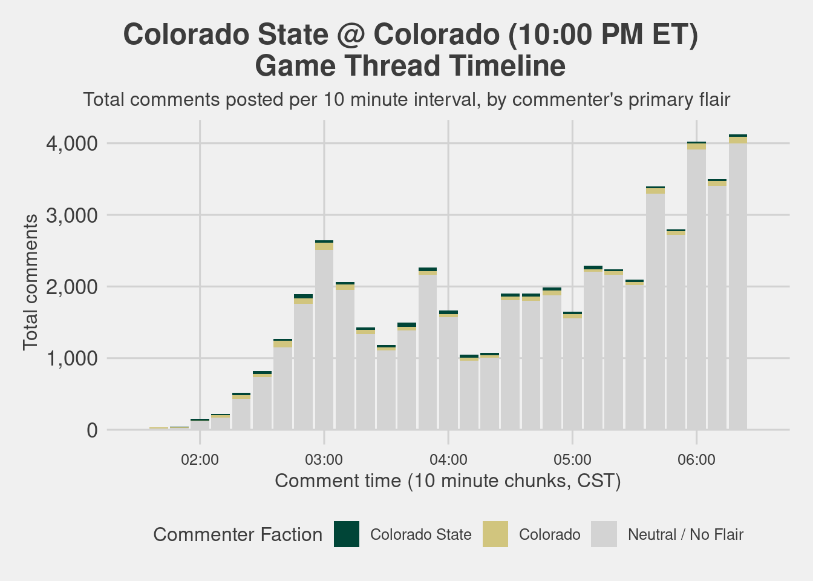
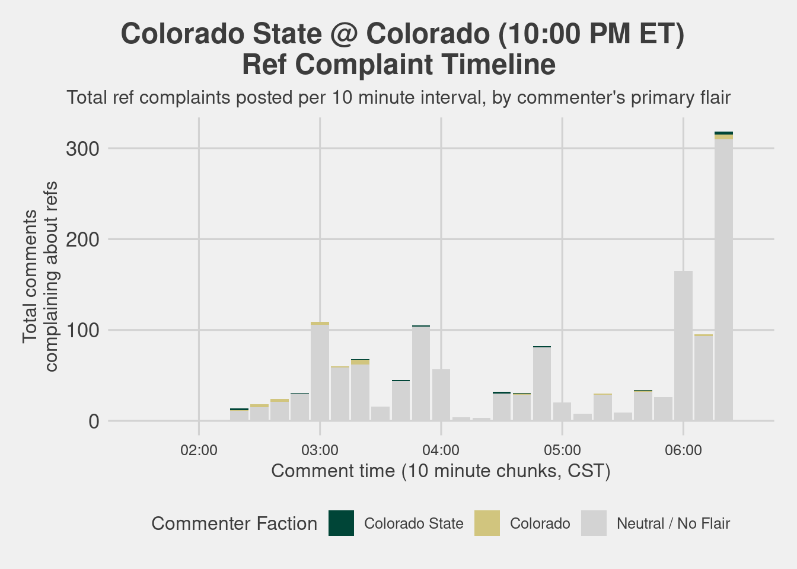

Alabama @ Texas (12:00 PM ET)
üìà Summary Statistics
Total Comments at time of data collection: 58,628
Most Common Primary Flair: No Flair
 (6,824 comments)
(6,824 comments)Total Comments from:
Neutral / No Flairs: 47,279 (80.64%)
Texas flairs:
 6,063 (10.34%)
6,063 (10.34%)Alabama flairs:
 5,286 (9.02%)
5,286 (9.02%)
⌚ Thread Timeline

ü§° Referee Complaint Analysis
Total Complaints: 3,647 (6% of all comments) – RATING: [Moderate]
Top Complainers: No Flair
(13.85% of all complaints and 0.86% of all comments)

üó£ Most Common Words Analysis